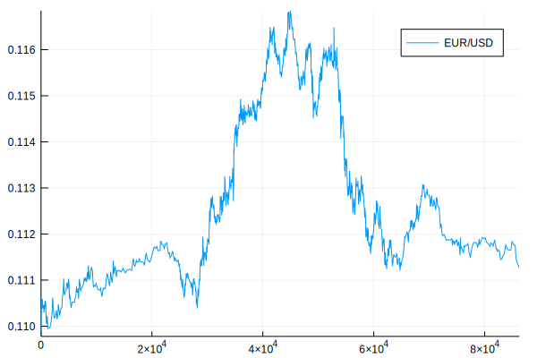
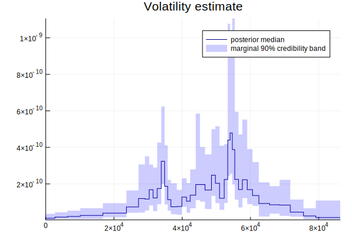
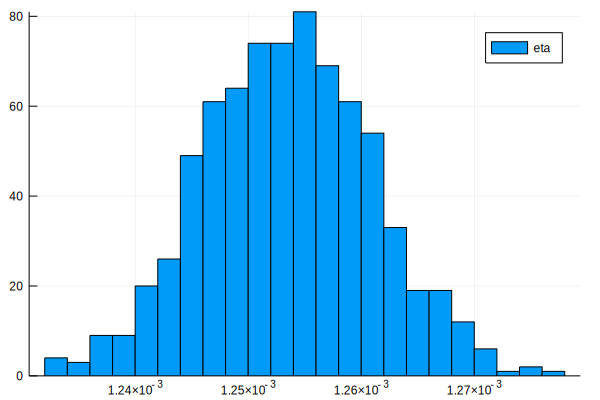
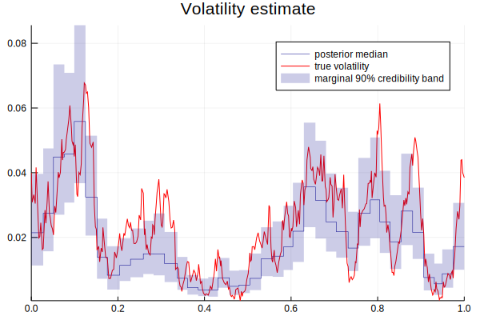
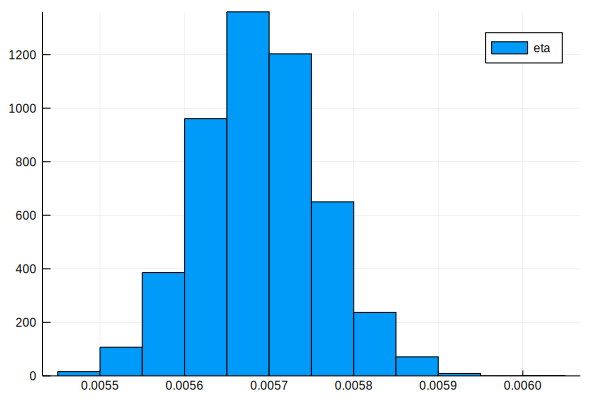

Introduction
(Available as Jupyter notebook at https://github.com/mschauer/MicrostructureNoise.jl/blob/master/example/MicrostructureNoise.ipynb)
MicrostructureNoise is a Julia package for Bayesian volatility estimation in presence of market microstructure noise implementing the methodology described in our new preprint:
- Shota Gugushvili, Frank van der Meulen, Moritz Schauer, and Peter Spreij: Nonparametric Bayesian volatility learning under microstructure noise. arxiv:1805.05606, 2018.
This blogpost gives a short introduction.
Description
MicrostructureNoise estimates the volatility function $s$ of the stochastic differential equation
$dX_t = b(t,X_t) dt + s(t) dW_t, \quad X_0 = x_0, \quad t \in [0,T]$
from noisy observations of its solution
$Y_i = X(t_i) + V_i, \quad 0 < t_1 < \ldots < t_n = T$
where ${V_i}$ denote unobservable stochastic disturbances. The method is minimalistic in its assumptions on the volatility function, which in particular can itself be a stochastic process.
The estimation methodology is intuitive to understand, given that its ingredients are well-known statistical techniques. The posterior inference is performed via the Gibbs sampler, with the Forward Filtering Backward Simulation algorithm used to reconstruct unobservable states $X(t_i)$. This relies on the Kalman filter. The unknown squared volatility function is a priori modelled as piecewise constant and is assigned the inverse Gamma Markov chain prior, which induces smoothing among adjacent pieces of the function. Next to yielding point estimates (e.g. the posterior mean), the method conducts automatic uncertainty quantification via marginal credible bands.
Setup
Install MicrostructureNoise via the package manager.
Pkg.add("MicrostructureNoise")
Then load the packages below.
using MicrostructureNoise, Distributions, Plots
srand(12);Real data example
As a first example, we apply our methodology to infer volatility of the high frequency foreign exchange rate data made available by Pepperstone Limited, the London based forex broker (https://pepperstone.com/uk/client-resources/historical-tick-data). Specifically, we use the EUR/USD tick data (bid prices) for 2 March 2015. We retrieve, log-transform and subsample the data and express time in milliseconds.
# uncomment if you do not mind to create this large file
# Base.download("https://www.truefx.com/dev/data//2015/MARCH-2015/EURUSD-2015-03.zip","./data/EURUSD-2015-03.zip")
# run(`unzip ./data/EURUSD-2015-03.zip -d ./data`)
dat = readcsv("../data/EURUSD-2015-03.csv")
times = map(a -> DateTime(a, "yyyymmdd H:M:S.s"), dat[1:10:130260,2])
t = Float64[1/1000*(times[i].instant.periods.value-times[1].instant.periods.value) for i in 1:length(times)]
n = length(t)-1
T = t[end]
y = log.(Float64.(dat[1:10:130260, 3]));plot(t[1:10:end], y[1:10:end], label="EUR/USD")
The prior specification is done via the Prior struct.
prior = MicrostructureNoise.Prior(
N = 40,
α1 = 0.0,
β1 = 0.0,
αη = 0.01,
βη = 0.01,
Πα = LogNormal(1., 0.5),
μ0 = 0.0,
C0 = 5.0
);Most importantly, we set the number of bins N. A second import choice is the hyper-prior of the smoothing parameter Πα. The technical meaning of the other parameter is explained in our paper.
We now sample the posterior using MCMC.
α = 0.3 # Initial smoothness hyperparameter guess
σα = 0.1 # Random walk step size for smoothness hyperparameter
td, θs, ηs, αs, p = MicrostructureNoise.MCMC(prior, t, y, α, σα, 1500, printiter=500);500 α 5.380198810926286✓ √η0.001265256088043003
1000 α 3.16338362080358✓ √η0.0012521150797968476
1500 α 3.7936135928197197✓ √η0.0012511490349212352
The inline help gives a synopsis of the function MCMC (and other functions).
?MicrostructureNoise.MCMCMCMC(Π::Union{Prior,Dict}, tt, yy, α0::Float64, σα, iterations; subinds = 1:1:iterations, η0::Float64 = 0.0, printiter = 100) -> td, θ, ηs, αs, pacc
Run the Markov Chain Monte Carlo procedure for iterations iterations, on data (tt, yy), where tt are observation times and yy are observations. α0 is the initial guess for the smoothing parameter α (necessary), η0 is the initial guess for the noise variance (optional), and σα is the stepsize for the random walk proposal for α.
Prints verbose output every printiter iteration.
Returns td, θs, ηs, αs, pacc, td is the time grid of the bin boundaries, ηs, αs are vectors of iterates, possible subsampled at indices subinds, θs is a Matrix with iterates of θ rows. paccα is the acceptance probability for the update step of α.
Keyword args fixalpha, fixeta when set to true allow fixing α and η at their initial values.
posterior = MicrostructureNoise.posterior_volatility(td, θs)
tt, mm = MicrostructureNoise.piecewise(posterior.post_t, posterior.post_median[:])
plot(tt, mm, label="posterior median", color="dark blue")
plot!(MicrostructureNoise.piecewise(posterior.post_t, posterior.post_qlow[:])...,
fillrange = MicrostructureNoise.piecewise(posterior.post_t, posterior.post_qup[:])[2],
fillalpha = 0.2,
alpha = 0.0,
fillcolor="blue",
title="Volatility estimate", label="marginal $(round(Int,posterior.qu*100))% credibility band")
A histogram of sqrt.(ηs) visualises the posterior of the observation error η, indicating that there is indeed a non-negligible microstructure noise.
histogram(sqrt.(ηs[end÷2:end]), nbins=20, label="eta")
How good does it work: Test with the Heston model
In order to test our model, we simulate the a trajectory of an asset with the Heston model (https://en.wikipedia.org/wiki/Heston_model).
The Heston model is a widely used stochastic volatility model where it is assumed that the price process of a certain asset, denoted by $S$, evolves over time according to the SDE $$ d S_t = \mu S_t d t + \sqrt{Z_t } S_t d W_t, $$ where the process $Z$ follows the CIR or square root process, $$ d Z_t = \kappa ( \theta - Z_t ) d t + \sigma \sqrt{Z_t} d B_t. $$ Here $W$ and $B$ are correlated Wiener processes with correlation $\rho$.
For this generated asset price trajectory we can compare our estimates from noisy discrete data with the true volatility known from the simulation.
Generate data from the Heston model
To define the model in Julia and to simulate the trajectory use the package Bridge.
Install it via the package manager.
Pkg.add("Bridge")
Usually we would not with $S$ directly, but with its logarithm $X_t=\log S_t$. Here we simulate $S$ directly for simplicity.
using Bridge
using StaticArrays
const R2 = SVector{2,Float64};struct Heston <: ContinuousTimeProcess{R2}
mu::Float64
kappa::Float64
theta::Float64
sigma::Float64
end
Heston(;mu = NaN, kappa = NaN, theta = NaN, sigma = NaN) = Heston(mu, kappa, theta, sigma)Heston
Define drift $b$ and dispersion $σ$ of the process.
Bridge.b(s, x, P::Heston) = R2(P.mu*x[1], P.kappa*(P.theta - x[2]))
Bridge.σ(s, x, P::Heston) = Diagonal(R2(sqrt(x[2])*x[1], P.sigma*sqrt(x[2])))We choose the following setting.
T = 1.0
n = 4000
P = Heston(mu = 0.02, kappa = 7.0, theta = 0.04, sigma = 0.6)Heston(0.02, 7.0, 0.04, 0.6)
The process is simulated on a fine grid and sampled at $n=4000$ random timepoints.
nf = 10 # generate the process on a finer grid than it is observed
tfine0 = T .* sort(rand(n*nf-1))
tfine = [0.0; tfine0; T]
is = [i <= n-1 for i in 1:length(tfine)-2]
is = [true; is[randperm(length(is))]; true]
t = tfine[is];
Generate a sample path with the Euler scheme from correlated Brownian motions, $\log$-transform and subsample the data. Also we now the true volatility of of the transformed process by Itô’s formula.
u = R2(1., P.theta)
W = sample(tfine, Wiener{R2}())
ρ = -0.6
map!(v->R2(v[1], ρ*v[1] + sqrt(1-ρ^2)v[2]), W.yy, W.yy) # correlate Brownian motions
Xfine = solve(EulerMaruyama(), u, W, P)
xtrue = log.(first.(Xfine.yy[is]))
s0(t) = sqrt(Xfine.yy[searchsortedfirst(Xfine.tt, t)][2])
y = copy(xtrue)
η0 = 0.005^2
y .+= randn(n + 1) * sqrt(η0);Perform inference using MicrostructureNoise.
This proceeds along the same lines as before.
α = 5.0 # Initial smoothness hyperparameter guess
σα = 3.0 # Random walk step size for smoothness hyperparameter
td, θs, ηs, αs, p = MicrostructureNoise.MCMC(prior, t, y, α, σα, 10000, printiter=500);
println("acceptance probability $p")500 α 6.853859145847748✓ √η0.005771926854201921
1000 α 2.3675920707901756 √η0.005699848296846304
1500 α 5.192703331810684✓ √η0.0056889793178693405
2000 α 6.672726750385639✓ √η0.005739263457748688
2500 α 10.954010592981682 √η0.00557738229744995
3000 α 7.335157644685448 √η0.005621248336034742
3500 α 3.2354172026801753✓ √η0.005727353421158912
4000 α 2.6568201471608495 √η0.005689253410411969
4500 α 3.099298872537003✓ √η0.005632507527647822
5000 α 7.762047671683255 √η0.005663289695359922
5500 α 5.852303831066731✓ √η0.005673097727805116
6000 α 2.5595148075010314 √η0.005753480671481345
6500 α 7.32620642995769 √η0.005607045117888518
7000 α 2.7717265420538233 √η0.005898376055226177
7500 α 10.030202608593427 √η0.0057819434558757715
8000 α 4.106323352786911 √η0.005709326208812153
8500 α 4.890730550576268✓ √η0.005731542876067114
9000 α 10.340522219236512 √η0.0056670123045837574
9500 α 8.682764529222913✓ √η0.00564884996370438
10000 α 7.680984090492615✓ √η0.005697928748866279
acceptance probability 0.347
posterior = MicrostructureNoise.posterior_volatility(td, θs)
tt, mm = MicrostructureNoise.piecewise(posterior.post_t, posterior.post_median[:])
plot(tt, mm, label="posterior median", linewidth=0.5, color="dark blue")
plot!(t[1:10:end], (s0.(t[1:10:end])).^2, label="true volatility", color="red")
plot!(MicrostructureNoise.piecewise(posterior.post_t, posterior.post_qlow[:])...,
fillrange = MicrostructureNoise.piecewise(posterior.post_t, posterior.post_qup[:])[2],
fillalpha = 0.2,
alpha = 0.0,
fillcolor="darkblue",
title="Volatility estimate", label="marginal $(round(Int,posterior.qu*100))% credibility band")
The greyish band mostly covers the red curve, the true volatility.
This is nice: Without even using the knowledge of the model, completely ignoring the drift, we still get a nice estimate and reasonable uncertainty quantification of the underlying volatility, and that using from indirect and erroneous observations.
A histogram confirms that also the estimate of the observations noise is good.
histogram(sqrt.(ηs[end÷2:end]), nbins=20, label="eta")
References
Shota Gugushvili, Frank van der Meulen, Moritz Schauer, and Peter Spreij: Nonparametric Bayesian volatility estimation. arxiv:1801.09956, 2018.
Shota Gugushvili, Frank van der Meulen, Moritz Schauer, and Peter Spreij: Nonparametric Bayesian volatility learning under microstructure noise. In preparation.